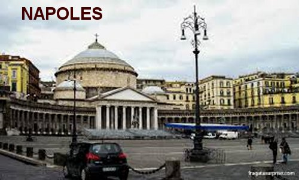
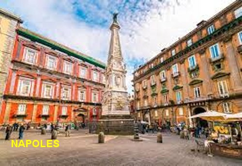
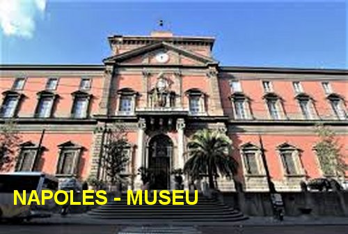
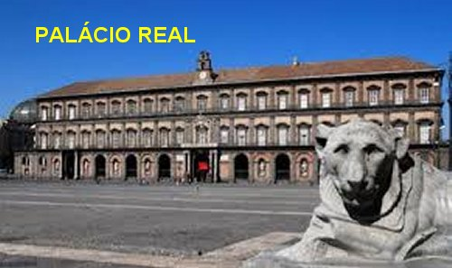
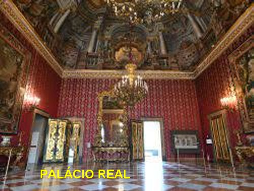
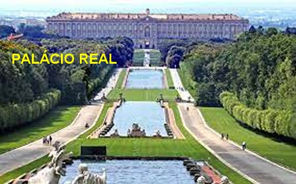
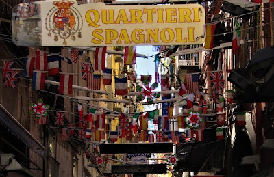
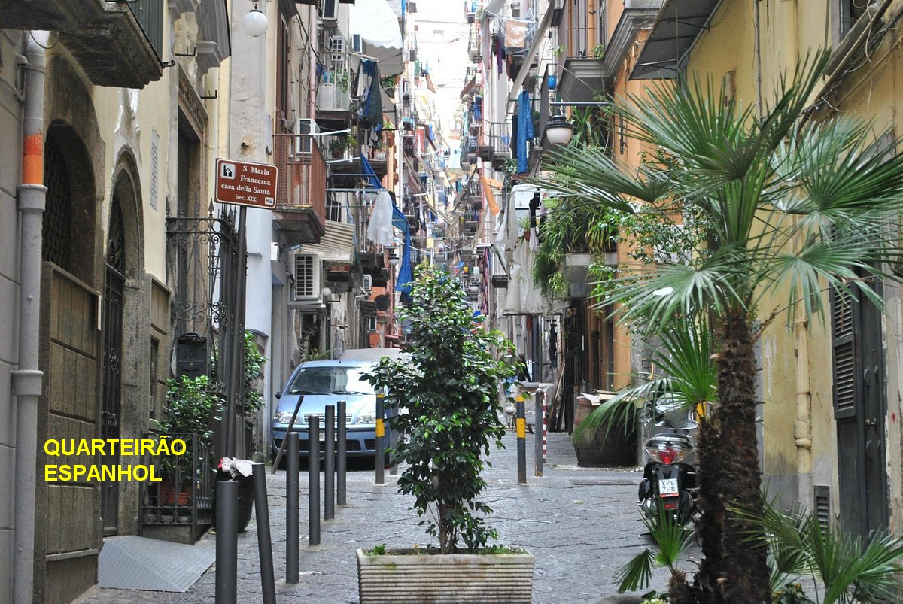

FOTOGRAFIAS








"NOTICIAS DO APOSTOLADO"
Convidamos-lhe a visitar o "PORTAL DO APOSTOLADO", endereço abaixo. Nele encontrará Sites sobre as Aparições de Nossa Senhora; a Vida e Obra de Jesus de Nazaré; um profundo e autêntico conhecimento sobre o Criador; o Divino Espírito Santo; Vida e Obra de diversos Santos; Exercícios Espirituais; Via Sacra; a Reza do Terço; Anjos do Senhor; e muito mais. Todos os Sites foram elaborados com muita dedicação e sobretudo, fundamentados na Sagrada Escritura, na Tradição Cristã, nas Manifestações Sobrenaturais e na Vida e Obras de diversos Santos, com o objetivo de informar somente a verdade.
http://www.apostoladosagradoscoracoes.com/
Apresentamos as principais organizações que ajudam na divulgação deste Site:


Para comunicar-se conosco, utilizar o E-mail abaixo: